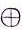

Chapter 1 - Counting
If math is a language... what is it talking about?
It is said that math is a language, or as Galileo said it "mathematics is the language with which God has written the universe", which sounds really cool. But if math is a language, then it should be possible to express oneself with it.
For instance, I can say: "the dog ate my math homework", or "my homework? I think the dog ate it...", or even "Oh no! My big, bad dog must have eaten my math homework!". The meaning of all three sentences is the same, but they have different tone or personal style, and some can sound more convincing to, say, a teacher than others (just saying).
This idea is important: things can be written in various ways (syntax) but they might mean the same thing (semantics). Also, writing something in a certain way can be helpful: if I write a sentence as subject-verb-object, it might be simpler to analyze it or translate it into another language; so one might decide that "dog ate homework" is a really good representative of all possible sentences about dogs and homeworks, so to use a fancy term for it we could call it the normal form for sentences. A normal form is then a kind of template, a good representative, for a bunch of things that look different (syntax) but mean the same (semantics).
In math there are plenty of examples of normal forms. A fraction like 34 actually means 0.75, but it can be written in many other ways, such as: 68 , 912 , 1216 , 3040 , -3-4 , 1.52 , ect. The do not look the same (syntax) but they have the same meaning (semantics)... but which one should I use as "the fraction whose value is 0.75"? Or, what is the normal form for a fraction? It makes sense for a normal form to be the simplest notation possible for a certain mathematical entity: here we can take the fraction that has the smallest values (so surely not 3040), and would like positive values if possible (so not -3-4), and since we are looking for something clear and simple, let's avoid also numbers that are not whole (that is numbers without decimals, so we would like to exclude 1.52). And the winner is: 34, because there is no smaller pair of whole numbers that would do.
The next question might be what transformations are legal on something, so that its look changes, but not its meaning. In my sentences I can change the tone, and the meaning more or less stays the same. In a fraction multiplying both numerator (the top number) and the denominator (the bottom number) leaves the faction's value the same; unless I multiply by 0, in which case the fraction loses meaning. However, some ways to rewrite my fraction 34 are more informative than others, for example: 34 = 75100 = 300400 . Saying that something is 75 over 100 reminds me that 34 is also the 75% of something. On the other hand, if I have 400 people in a group, saying that 300 of them have brown eyes, might be more interesting than saying that 34 of them has brown eyes. So syntax has its importance too.
In this book I will argue that normal forms and transformations, syntax and semantics, are really most of what we do when we work with math, and than we could rewrite our math books making more explicit that math is mostly about manipulating syntax to learn something about semantics. Furthermore, like any other language, math was constructed by people with and for other people, so historically math changed when we needed to talk about new or different problems, as our human world got more and more complex. Math also changed when it was not working properly and it needed fixing. So not only math looked different in the past, but also this historical perspective tells us that math (and math notation) was INVENTED at some point, was changed to be better, and eventually formalized into a standard. This in turn means that we should be able to look back and re-create the need for the various notations and rules in math, and hopefully understand it not just in the sense of "how do I do something", but also in the sense of "where does this come from?" and "why is it useful to express something like that?", and even "how can I be sure that this is right?". All forbidden questions in school math.
Finding a name for every number
Ok, syntax and semantics, fine, but fractions are already a bit complex, not simple as whole numbers. A number like 25 is just what it is right? No syntax VS semantics here, right? How can there be a normal form and alternative syntaxes for a number?
We can start from the meaning: counting should be about working with things. For example, if I have these sheeps and add these other sheeps, I get a total of these many sheeps. I could DRAW this situation like:

- I could use the word "sheep",
- or a clay token
- or a pictogram representing the token 
- or simply I, in what is called the tally system or unary system.
Note: we can also define subtraction in this direct way, so that if adding is "putting together" then subtracting is "taking away" from a flock of sheeps.
Counting with tallies
Remember that we were talking about syntax and semantics in math? Our numbers so far are more or less only semantics: III is really a short name for "I have three things". And this (unary or tally) notation has a major problem: the more things I want to count, the more I characters I will need to write.
A trick could be to group the Is to ease counting them: it seems easy to recognize up to five things, so we could decide to represent five things into a special symbol, perhaps F.
Something like this is done in Maya numbers and Roman numbers).
My numbers can then be written as:
I, II, III, IIII, F, FI, FII, FIII, FIIII, FIIIII, FF, FFI, ect.
Much better, shorter and easier to read. However, for numbers larger than a few hundreds this notation will still be very long. Also, what happens to adding? I cannot simply "put together" my numbers anymore.
Consider: FII + FFIIII , which is seven plus fourteen. Putting together the two numbers I would get: FIIFFIIII, which is now a meaningless number in my system. Why? Because it is not in normal form!
The normal form here is that you should never have more than five I in your numbers, because otherwise you should replace some with a F character; moreover, you should not write Fs and Is intermixed, because in the list of all numbers we had above, we always placed the Fs at the beginning of a number, and the Is after the Fs. So FIIFFIIII is wrong in many ways. Let's transform it to fix it. First I can rewrite it with all Fs in the beginning, then every time I can remove five Is and will, and place an F at the beginning instead:
FIIFFIIII → FFFIIIIII → FFFFI
which is twenty-one. How can I be sure it is twenty-one? I could do it the "semantic way", converting both numbers to their value, as a sequence of Is, add them by putting the Is together, and then see what I get:
FII → IIIII II
FFIIII → IIIII IIIII IIII
And together they are: IIIII II IIIII IIIII IIII = IIIIIIIIIIIIIIIIIIIII , which can be grouped by five, and becomes: IIIII IIIII IIIII IIIII I , so twenty-one!
Try to see how our friend twenty-one looks. And what about 210?
What would zero look like?
Moral of the story so far: unary works, but numbers get too long. Defining a short-hand notation for numbers helps, but we then have to redefine what it means to add. Adding means putting things together, but when we have a particular notation for numbers (other than unary) we are forced to define special rules to add numbers using only they way they look, not what they mean, because we want to add numbers using their syntax and not their semantics. And we must make sure that the two ways of adding give the same results in any possible case.
The need for zero
Instead of sticking to the Is only, which is the unary system, we could go another way. We could try using boxes to write our I-numbers in a shorter way.
For example say that every 10 sheeps is a flock. Then if I have thirty-four sheeps I also have three flocks and four sheeps.
Using boxes, this number could be represented as:
+-FLOCK-+ +-SHEEP-+ | III | | IIII | | | | | +-------+ +-------+Again, drawing the two boxes every time I want to write a number is too much work... I could simply write my number like this: IIIIIII. Interestingly, the order of the boxes counts, since IIIIIII IS NOT the same as IIIIIII! (spoiler! The first is 34 and the second 43)
Let's see what we can express with this new notation (AKA syntax). What about one, or I? It could be like this: ???I But what should I put in the flock box? Nothing for sure, but we DON'T HAVE a symbol for nothing in our unary notation; so we need to decide how to say "zero" in our notation. For example we could just use an empty box, and one would look like I . Good, so now I can write some numbers: zero = , one = I, two = II, III, IIII, IIIII, IIIII I, IIIII II, IIIII III, nine = IIIII IIII, ten = I , eleven = II, twelve = III, IIII, ect.,
IIIII, IIIII IIIII, ect., ninety-nine = IIIII IIIIIIIII IIII.
This is definite improvement over unary notation! Compare IIIII IIIIIIIII IIII with its unary version: IIIIIIIIII IIIIIIIIII IIIIIIIIII IIIIIIIIII IIIIIIIIII IIIIIIIIII IIIIIIIIII IIIIIIIIII IIIIIIIIII IIIIIIIII !
Note: we might want to impose a rule at this point, that in our new box notation we are only allowed to have zero, one, ..., nine Is in each box, no more. Otherwise I could write IIIII IIIII II and that would have the same meaning (semantics) as III. Do we want to have two (or more) ways to write the same number? Is it a good idea? More on this later.
Moral of the story so far: using ordered boxes (AKA a positional system) to arrange numbers in unary, we get a much shorter notation, but we have to define a convention for representing zero. And of course, now we don't know how to add two box numbers without going back to their unary expressions. That is, we do now know how to calculate III + IIIII using only the way these two numbers look (their syntax).
Enter the spike abacus
Of course we don't want to use Fs and Is, but digits: 0, 1, 2, 3, 4, 5, 6, 7, 8, 9. But what to do when there are more than 9 (IIIII IIII that is) things?
Instead of inventing new symbols (like F), we could group our symbols and give a meaning to their position: just like with the sheep-box and flock-box, only here we make our boxes for units, tens, hundreds, ect. The result is the same as using a spike abacus.
How does our old friend twenty-one look like here?
Does the order count on the abacus? Try with 34 and 43...
So we can define numbers using the abacus; note that the spikes increase of 10 times for every spike going from right to left, and that is the reason this notation is called base 10.
How can I convert a number in this notation to my original tally (AKA unary) notation? What is 23 in Is?
We need to look at 23 as some kind of text, not really a number, because semantically only unary numbers are true numbers. So 23 is really 23, where the digits 2 and 3 are just short names for II and III.
To find the actual value of 23 we have to calculate 2 * 10 + 3 * 1 where "*" stands for "times" or multiplication. This kind of mathematical expression is a weighted sum, or linear combination, and I will argue in this book that linear combinations are another of the hidden-but-central ideas in math.
Still, the result of 2 * 10 + 3 * 1 will NOT a unary number, so we have to calculate some more steps. For example we could start replacing the base 10 numbers with their unary counterparts:
2 * 10 + 3 * 1 →
2 * IIIII IIIII + 3 * I →
II * IIIII IIIII + III * I
and we can easily define multiplication for unary numbers. In fact,
II * someUnaryNumber is just
someUnaryNumbersomeUnaryNumber, and any number multiplied by I simply remains the same. Hence,
II * IIIII IIIII + III * I →
IIIII IIIII IIIII IIIII + III
which is 23 in our notation. Bingo!
In general any number that fits the template ABCD means
A * 1000 + B * 100 + C * 10 + D *1
eventually written as a unary number, or expressed via a bunch of sheeps.
And because of the abacus, we are assuming that A, B, C and D can only be single digit numbers, so each of them is 0, 1,... , 9.
This style of numbers is very common: days-hours-minutes work this way, degrees of angles also work in this way (and they are use powers of 60 on their abacus, not powers of 10 as we do).
What is the normal form for these abacus-numbers? Can we even write the a number in multiple ways?
And what happens to addition (and subtraction) with the abacus-notation?
Let's take the number 13 as an example, or 13. It is in normal form with respect to the abacus, because I can put 1 and 3 beads on two spikes, and I will not violate the restriction that every spike in the abacus must have between 0 and 9 beads at any given time.
How can 13 be written in other ways? If we drop the restriction, I could write 13 as
013, and still mean IIIII IIIII III.
This might look weird, but it is a common way to work with numbers. For instance in imperial units you can write: 2 yards and 4 feet, or 2.4. With our boxes that would be 24, and in feet that gives 2 * 3 + 4 (since 1 yard is defined as 3 feet), which is 10 feet, or
010. So in imperial units 24 is the same as 010.
OK. Now about the addition. Following our previous strategy for defining addition, we could simply say: simply add box by box, then fix the number so it is in normal form (for the abacus in this case). You can play with this idea by trying to add some numbers with the two abaci below.
When you select the "Normal form?" option, you will see the result corrected to be in normal form (the result is represented in the abacus on the right).
So, what is the rule for adding two numbers? Just add digit by digit; however, you might obtain a result that is not written correctly (that is, it is not in normal form), and in that case you will have to fix it. And while you are fixing a digit, you might create problems for the next one. Hence, it is better to start fixing the digits from the lower one (the right-most one) and then consider the next digit (to the left), and keep going until all digits are fixed.
Example:
234 +
567 = ?
= 2+53+64+7
= 7911.
Use the abacus-adder above to check what the result looks like, with and without fixing the normal form of the result.
Unfortunately this number is NOT in normal form for an abacus, so I have to fix it:
7911 →
7911 -10+10 →
7911-10 +10 →
791 +10 →
79+11 →
7101
I'm using a trick to help me see how much than 10 there is in the 11. I subtract and add 10 to my number, 11, and I REWRITE a bit the result, which I'm sure will still be 11. In fact: 11 = 11+(-10+10) = (11-10)+10 = (1)+10, so now I know that 11 was 1 more than it should have been, for the abacus spike to take it.
At this point I am left with
7101, which is still not in normal form, so I can continue with the tens, and eventually the hundreds:
7101 →
710 -10+101 →
70+101 →
7+101 →
801
Done. Fixed.
This procedure might look vaguely familiar. It is in fact more or less what we are told in elementary school when we first face additions: it is adding with carryover. And it is all because adding two numbers written in this way (instead of unary numbers made of Is) might generate a result that is not in normal form, hence we need a special way to rewrite it back to normal form.
In our example we pass through a few representations of the result, which stand for the same value, but look different, and only one of them is acceptable (AKA in normal form):
7911,
7101,
801.
Interestingly, the value of all three numbers is the same (using our linear combination with powers of 10):
7 * 100 + 9 * 10 + 11 * 1 → 700 + 90 + 11 → 801
7 * 100 + 10 * 10 + 1 * 1 → 700 + 100 + 1 → 801
8 * 100 + 0 * 10 + 1 * 1 → 800 + 0 + 1 → 801
How would you define subtraction using the abacus?
Try with few examples to see if you definition breaks the normal form.
Moral of the story so far: if math is a language... what is it talking about?
Mainly math talks about counting, and counting has to do with numbers (because sheeps take up too much space). The only true numbers are unary numbers, because the way they look (syntax) tells immediately what they mean (semantics). Addition and even multiplication are pretty simple with numbers made of Is.
But unary is too long and tedious to work with. Therefore, we want to invent shorter notations. When we do we have to redefine addition (and subtraction and multiplication), so that it works on the way numbers look in our new notations (their syntax).
Grouping numbers into boxes, or representing the groups as spikes on an abacus makes for good syntaxes for numbers. Using these notations we have to find a way to express that some group can be empty, hence we invent ways to write zero.
For every notation we have to ask: what is the normal form (that is, the correct way to write a number in that notation), in which other ways can the same number be written, and how can we transform a number by changing its syntax but not its value (semantics). We use these ideas to redefine addition (and other operaions) in any new notation we invent.
Finally, we might need a weighted sum (AKA linear combination) to find out the actual meaning of a number. For example with the abacus, we need linear combination of powers of 10 to find out what number is represented by a specific set of beads on its spikes. Weigthed sums are an interesting way to blend addition and multiplication. But isn't multiplication BUILT ON TOP of addition? Isn't multiplication a sort of repeated addition? If so, how much sense does it make to mix the two operations? Sure, OK, but this is stuff for the another chapter.
Puzzles
(1) Work with days-hours-minutes.
Rewrite the following time-numbers in the correct normal form (which is: no more than 23 hours and no more than 59 minutes in any number), without changing their meaning. Then rewrite each in minutes.- 0185 in days-hours-minutes = ?????? = ? minutes
The questions here are: "how to correctly write 1 hour and 85 minutes?", and "how many minutes are there in 1 hour and 85 minutes?" - 128125
- 72370
(1.1) Add the following pairs of time-numbers, and write the results in the correct normal form:
- 02040 + 2321 = ? day?? hour??? minutes
- 11225 + 21855 = ?
(2) Counting dogs, or create a new kind of number system.
Say that in your neighborhood there are many dogs. Instead of counting them by using tallies (AKA using unary numbers), you want to create your own shorthand for dog-numbers. So you decide that: D stands for 1 dog, when 3 dogs are together they will start barking, so B stands for 3 dogs. And if you put 2 groups of barking dogs together you can make a small musical performance, so M is for 2 Bs. We can also agree that the order of the letters does not matter in this notation: so DDB (which is 1+1+3=5 dogs) is the same as DBD or BDD. The normal form here is that there shoud not be more than 2 Ds in any number (because 3 times D is B), and there should not be more than 1 B in any number. Rewrite the following numbers in normal form if needed, and find out how many dogs each number represents (AKA their value in uniary or in ordinary base 10 if you prefer):- DDDDD = ? M?? B??s? D = ? dogs
- DM
- MBDMDMM
- BMD
- MDDM
- BD
- BDBD
- BMDBMD
(2.1) Create a rule to add two dog-numbers. Try your rule with:
- DD + DD = ? M?? B??? D
- BMD + BMD
- MBDMDMM + BMD
What happens if/when you have to fix the result of an addition? Do you need to consider carrying in your rule?